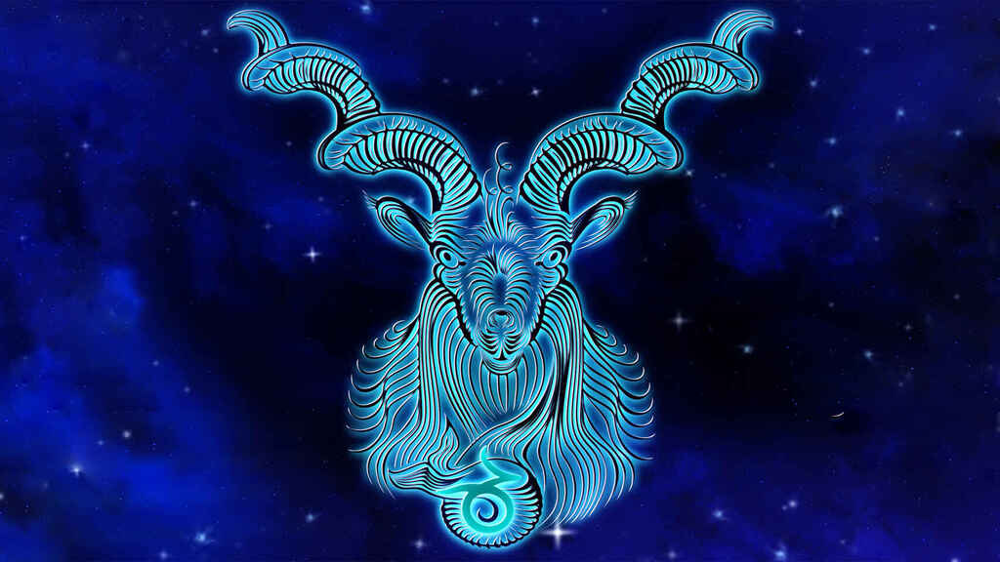

CAPRICORNIO
Todas aquellas personas nacidas en la época navideña entre el 22 de diciembre y el 20 de enero son Capricornio. Este signo es muy estable, por lo que sus características son el trabajo duro, la fiabilidad, la prudencia, la practicidad, la ambición y la justicia. En el lado malo, la melancolía y el pesimismo pueden ser sus dos grandes enemigos para alcanzar la felicidad.
Capricornio es un signo cardinal y de tierra, y uno de los signos del zodíaco más constante, sólido y apacible. También se caracteriza por ser prudente y práctico en todos los asuntos que le conciernen. Sus aspectos más negativos tienden hacia el pesimismo, la fijeza y la melancolía. En general, son personas trabajadoras, responsables y dispuestas a persistir lo que haga falta para conseguir su objetivo; además son muy fiables y cuentan con unas elevadas dosis de paciencia y resistencia para avanzar hacia sus objetivos; en este sentido, su capacidad para la gestión resulta asombrosa. Por otra parte, no soportan la falta de honradez ni de disciplina.
Capricornio atesora conocimiento por medio de la experiencia. Es el sabio que reconoce y valora lo necesario de lo que no lo es, lo que persiste de lo que perece, la realidad y su representación. Cuando se trata de amor, a veces le cuestan las relaciones, sobre todo con el sexo opuesto; necesita mucha dedicación. Aunque una vez que se enamoran, suelen ser personas muy fieles y algo celosas. Las reticencias de Capricornio se derivan de su pensamiento; para la cabra, el sexo seguro es el mejor sexo.
CANCER

Tradicionalmente, la astrología occidental atribuye al signo del zodiaco Cáncer aquel que abarca entre el 22 de junio y el 21 de julio características como la lealtad, la simpatía, la sensualidad, la intuición, la creatividad, la cautela, la necesidad de proteger a sus familiares y amigos y la sensibilidad. Pero también, las personas de este signo pueden ser celosas, inseguras, desconfiadas, muy golosas e incluso introvertidas.
Cáncer es un signo cardinal y comprendido dentro de los signos de agua. De los signos zodiacales, su carácter es el menos claro; puede ser desde retraído, insociable y pelma, hasta deslumbrante, atractivo y admirado por los demás. A veces es demasiado soñador, por eso equivoca el mundo real con la utopía que ha construido en su cabeza: el refugio de las fantasías que adora. Los Cáncer tienen una memoria extraordinaria y además poseen un talento innato para las artes y las letras notable. Además son ambiciosos y pueden cambiar sin dificultad de profesión, de amistades, etc.
El Cangrejo vive su vida dando dos pasos hacia delante y uno hacia atrás; es curioso pero temeroso, es bravo pero sensible, es voluble pero conservador, ¡vamos!, ¡el mejor exponente del espíritu de la contradicción pura! Cuando se trata de amor, en sus relaciones Cáncer es también una mezcla de contradicción; si mantiene una relación estable, ama de verdad, sinceramente, aunque en su yo interno eso no significa que no pueda mantener relaciones sexuales con otras personas. Además, se caracteriza por una ternura, emoción e imaginación que le convierten en un amante muy, muy especial.